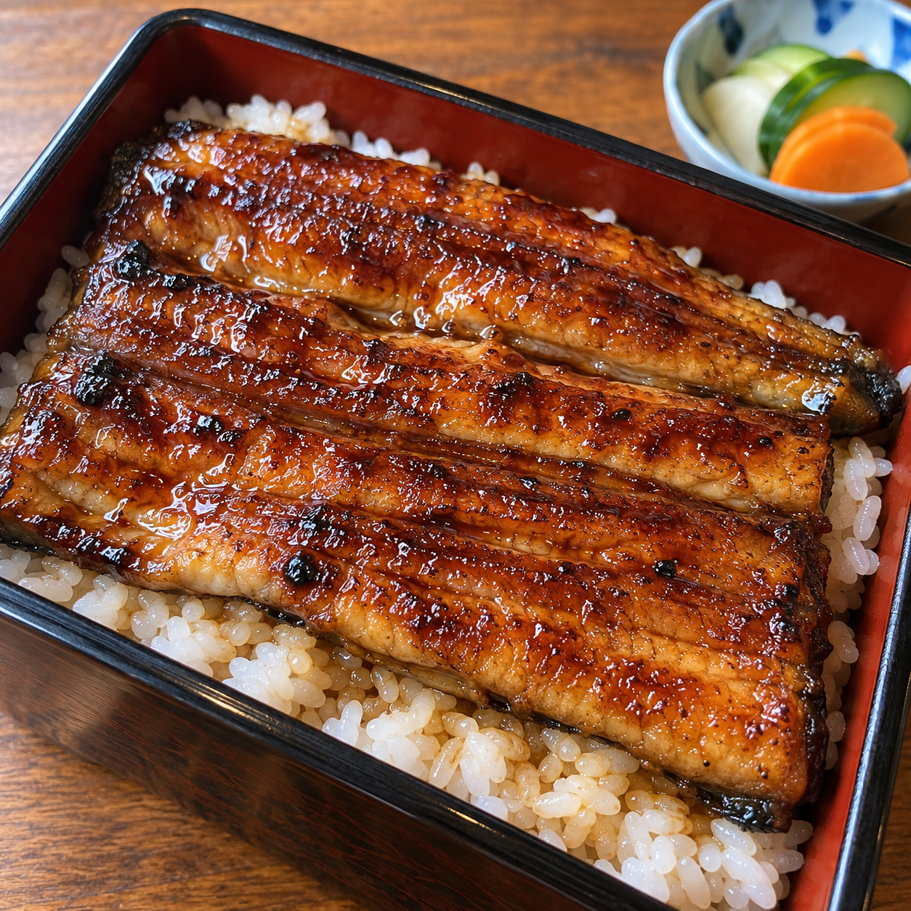

이번 휴가 때
뭐하셨어요?
오사카 가서
맛있는 거 먹고 왔어요!
우와! 정말요?
어디가 제일 맛있었어요?
이번 휴가 때
뭐하셨어요?
오사카 가서
맛있는 거 먹고 왔어요!
우와! 정말요?
어디가 제일 맛있었어요?
장어덮밥집이요! 이름이…
잠시만요, 찾아볼게요.
사진도 찍고
카톡도 보냈었는데...
아 맞아,
Weave로 찾아볼까요?
기억나는 만큼
입력해 보세요.

사진 · 오사카 · 지난주맞아,
우나기 토쿠야였어요!
맛있겠다!
저도 가보고 싶네요!
일식 · 장어덮밥
일식 · 장어덮밥